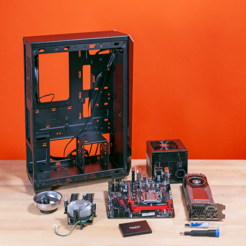
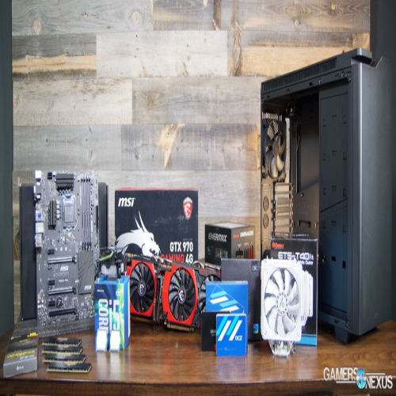
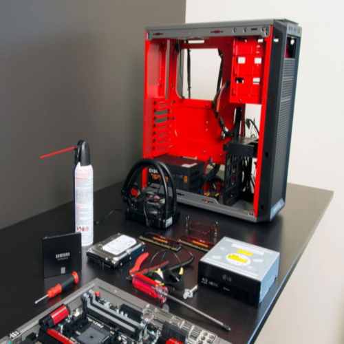
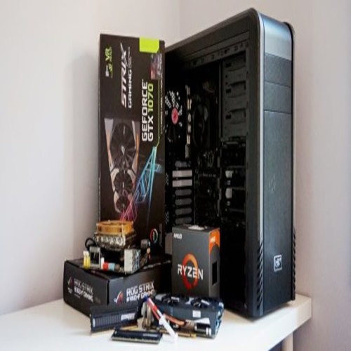

One of my favorite hobbies is building computers. While it takes more effect than buying a prebuilt pc, building a computer yourself allows for greater flexibility and a lower cost. All computers require you get a CPU, motherboard, ram, powersupply, and storage. After hooking them togeather you can connect a monitor, keyboard, and mouse to start using your computer. If you dont feel comfortable on your own; however, there are many guides availible on how to build computers.
   